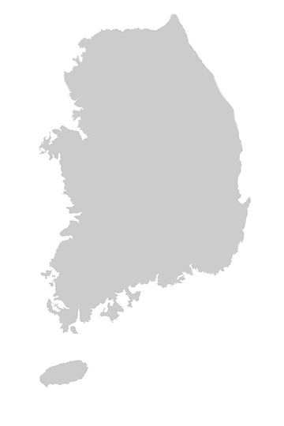

오시는 길
대우조선해양의 위치를
안내해드립니다.
대우조선해양은 관계사 및 고객사와의 접근성이 높은
해양 지역에본사를 두고 상선의 생산이 용이한 거제도 내 생산시설을 갖추어
사업운영에 있어 업무적 / 지리적 효율성을 극대화하고 있습니다.

대우조선해양 본사
| 회사명 | 대우조선해양주식회사 Daewoo Shipbuilding & Marine Engineering Co., Ltd. |
| 주소 | 서울특별시 중구 다동 남대문로 125 대우조선해양 |
| 전화번호 | 02-2129-0114 |
- 종각역 1호선
- 우정국로 253m 직진
- 다동길 우회전 후 24m 이동
- 대우조선해양 본사
- 을지로입구역 2호선
- 다동길 좌회전 후 24m 이동
- 대우조선해양 본사